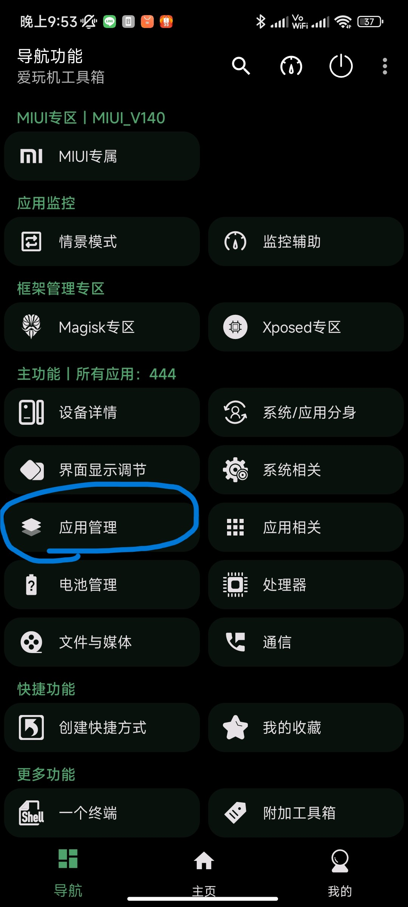
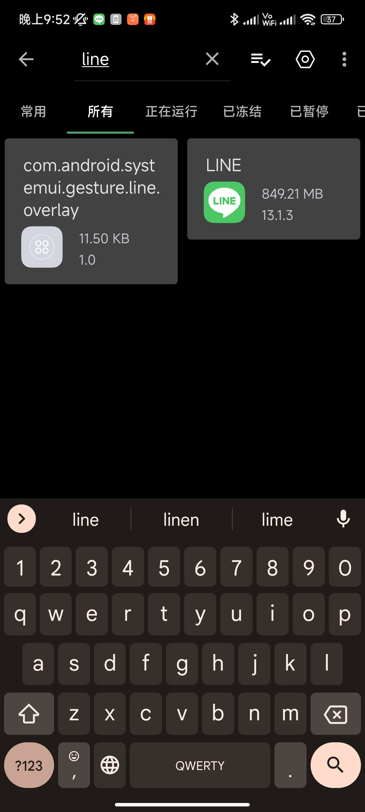
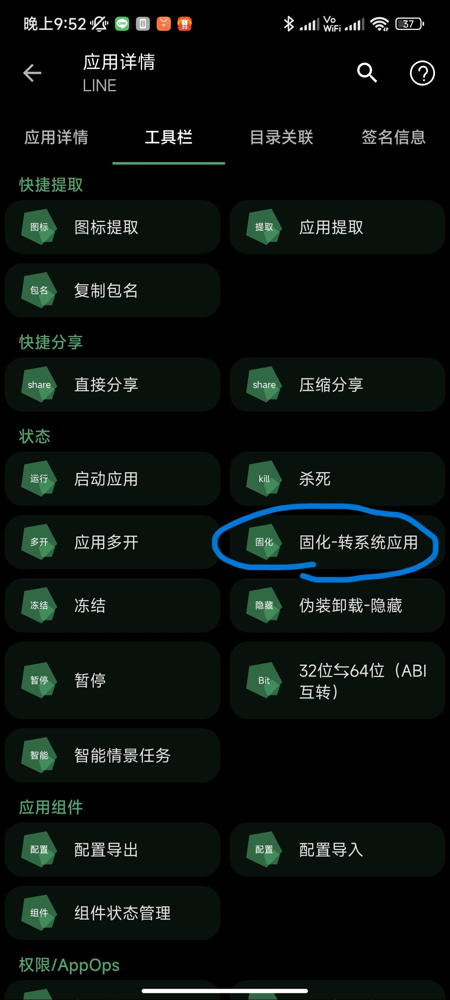
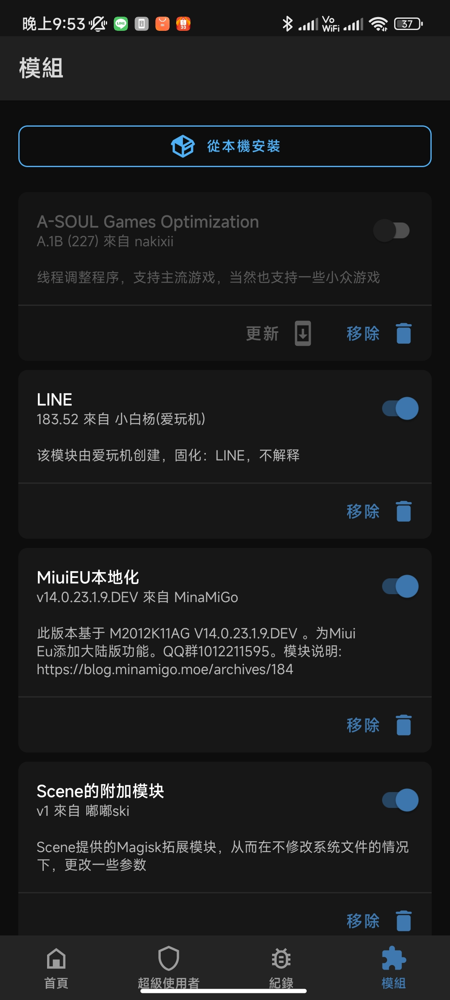

讓陸版MIUI也收的到LINE通知
作者:RSMN574
陸版MIUI的電量和性能省電策略過於激進，導致LINE、messenger等無法收到通知。
方法一(免root，但性能會略為下降)
停用電量和性能，解壓後接上手機執行DisablePowerKeeper，選擇服務項目
 點我下載
點我下載原文
方法二(需root，Xposed框架LSPosed)
下載apk後安裝，到lsposed啟用，勾選需要FCM推送的應用，給需要FCM推送的應用的【自啟動】權限
點我下載原文
方法三(需root，愛玩機工具)
點我下載下載apk後安裝，授予root等權限，點擊應用管理。
搜尋LINE或需要通知的應用

點選系統固化，並重啟

取消系統固化
開啟magisk，把LINE那個mod關掉或移除，並重啟即可
